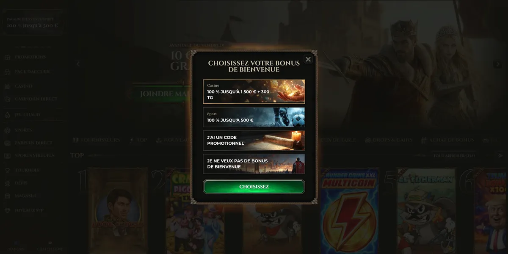
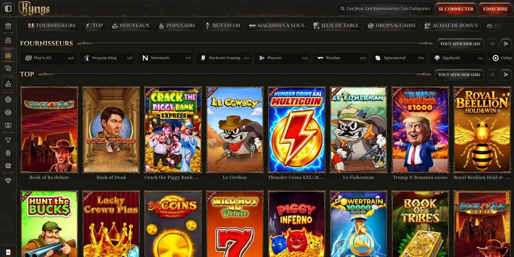
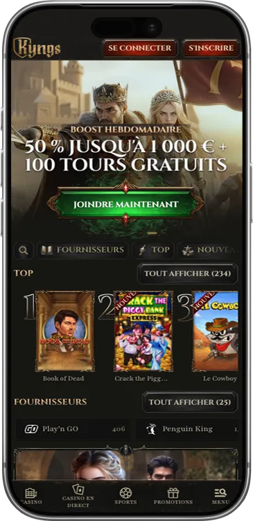
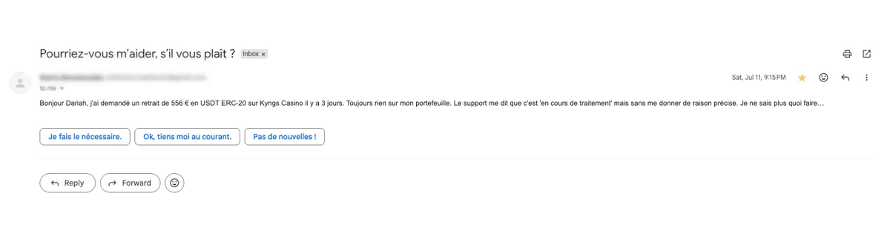
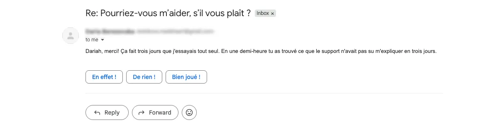

Rédigé par :
Dariah Belle
· Dernière mise à jour : Juillet 2026
18+. Le jeu en ligne doit rester un divertissement. Jouez avec
modération, fixez des limites et ne misez jamais plus que ce que vous
pouvez vous permettre de perdre. Si vous sentez que le jeu devient un
problème, demandez de l'aide dès maintenant.
Kyngs Casino est arrivé en 2025 avec une promesse royale : plus de
3 500 jeux, 113 fournisseurs et un
bonus de bienvenue jusqu'à
1 500 € + 300 tours gratuits. J'ai déposé 50 € via
Skrill, joué pendant dix jours et retiré 80 € avec un traitement en
24 heures. Voici mon retour complet, sans filtre.
Support francophone 24h/24, réponse en moins de 3 minutes
Promotions hebdomadaires en plus du bonus de bienvenue
Programme VIP avec cashback et manager dès le niveau Duc
25 méthodes de paiement, dont 10 cryptomonnaies
⚠️ Points faibles
Pas d'application mobile native
Délai de 7 jours pour remplir le wager du bonus de bienvenue
Interface sombre parfois moins lisible sur petit écran
Plafond de retrait à 700 €/jour pour les premiers niveaux VIP
Clauses CGU strictes sur le bonus hunting et le jeu à faible
risque
Kyngs Casino est-il fiable ?
Kyngs Casino opère sous
licence Curaçao Gaming Authority (CGA), numéro
OGL/2024/129/0131. Le casino appartient à 130 Group N.V., un groupe
qui exploite plusieurs dizaines de casinos en ligne avec un historique
de paiement documenté.
Les jeux reposent sur des RNG vérifiés par Gamecheck et le site
utilise un chiffrement SSL 128 bits pour protéger les transactions.
Casino.Guru lui attribue un Safety Index de 7,9/10,
classé au-dessus de la moyenne. Ce n'est pas une licence française
ANJ, mais les signaux de sécurité sont cohérents pour une plateforme
offshore récente.
Site officiel
kyngs.com
Propriétaire
130 Group N.V.
Lancement
2025
Licence
Curaçao Gaming Authority – OGL/2024/129/0131
RTP moyen affiché
95,9 %
Jeux
3 500+
Fournisseurs
113
Support
Chat live 24h/24 en français
Mobile
Site responsive, pas d'application native
Ce qui m'a frappée dès mon arrivée, c'est l'interface noire et dorée.
L'univers royal est assumé, les catégories sont accessibles rapidement
et les performances restent identiques sur iPhone et desktop.
Bonus et promotions

Bonus de bienvenue
Kyngs propose
100 % jusqu'à 1 500 € + 300 tours gratuits sur
Sizzling Hot Deluxe™. Le dépôt minimum est de 10 €, avec un wager
x35 sur dépôt + bonus, x40 sur les gains des free spins, une mise
maximale de 5 € et 7 jours pour remplir les conditions.
Exemple : avec 100 € déposés, vous recevez 100 € de
bonus, soit 200 € à jouer. Le volume de mise à atteindre est alors
de 7 000 €. Le délai est court : mieux vaut planifier ses sessions
avant d'activer le bonus.
Vendredi au samedi : Recharge de week-end, 50 %
jusqu'à 400 €, dès 10 € de dépôt, wager x35.
Dimanche : Cadeau du dimanche, 100 tours gratuits
sur Johnny Cash™ pour tout dépôt de 20 €, wager x40.
Programme VIP
Le programme VIP compte cinq niveaux : Écuyer, Chevalier, Baron, Duc
et Haut Roi. Le vrai palier intéressant commence au niveau
Duc, avec manager personnel et 5 % de cashback. Le
niveau Haut Roi monte à 10 % de cashback et 40 000 € de plafond
mensuel.
Niveau
Cashback
Retrait mensuel max
Manager
Écuyer
—
9 000 €
Non
Chevalier
—
14 000 €
Non
Baron
—
20 000 €
Non
Duc
5 %
28 000 €
Oui
Haut Roi
10 %
40 000 €
Oui
Comment s'inscrire
J'ai chronométré mon inscription :
4 minutes et 38 secondes. Le parcours est classique
et rapide.
Cliquez sur S'inscrire.
Choisissez votre bonus de bienvenue.
Renseignez e-mail, nom d'utilisateur et mot de passe.
Complétez nom, prénom, date de naissance, téléphone, adresse et
devise.
Validez via l'e-mail de confirmation.
Effectuez votre premier dépôt et activez le bonus.
Mon conseil : préparez votre pièce d'identité et
votre justificatif de domicile dès l'inscription. Le KYC sera
demandé au premier retrait.
Jeux et logiciels
Kyngs affiche plus de 3 500 titres provenant de
113 fournisseurs. On y retrouve Evolution Gaming,
NetEnt, Play'n GO, Yggdrasil, Nolimit City, Hacksaw Gaming,
Pragmatic Play, Playtech, Red Tiger, Push Gaming, Big Time Gaming,
ELK Studios, Quickspin, mais aussi des studios plus rares comme
Peter & Sons, Bang Bang Games, Jade Rabbit Studio, AceRun et Expanse
Studios.

Machines à sous : classiques, Megaways, Hold &
Win, cascades. J'ai aimé Plinko 2™ (BGaming, RTP 99 %), Barbarossa
Doublemax™ (Yggdrasil, RTP 96 %) et Rich Wilde and the Tome of
Madness™ (Play'n GO, RTP 96,59 %).
Jeux de table : blackjack, roulette, baccarat et
poker vidéo, avec aussi des tables First Person.
Jeux instantanés : Crash, Plinko et Mines pour
des sessions rapides.
Casino live : Evolution Gaming, Ezugi et
Playtech, avec Crazy Time™, French Roulette Live™, Lightning
Blackjack™ et Dead or Alive: Saloon™.
Retraits et dépôts sur Kyngs Casino
Kyngs accepte 25 méthodes de paiement, une
sélection très complète pour un casino lancé en 2025.
Dépôts
Méthode
Minimum
Délai
Visa / Mastercard
10 €
Instantané
Skrill / Neteller
35 €
Instantané
MiFinity / eZeeWallet
10 €
Instantané
Revolut / Google Pay
10 €
Instantané
Paysafecard / Flexepin
20 €
Instantané
Cryptomonnaies
50 €
Instantané
Retraits
Méthode
Minimum
Délai
Portefeuilles électroniques
20 €
24 – 48h
Cryptomonnaies
20 €
1 – 24h
Mon test : j'ai retiré 80 € via Skrill. Traitement
en 24 heures, vérification KYC incluse. Les limites
des premiers niveaux VIP sont de 700 €/jour, 2 250 €/semaine et 9
000 €/mois.
Kyngs ne propose pas d'application native. Le site responsive
fonctionne directement en HTML5 depuis le navigateur du smartphone
ou de la tablette. Sur iPhone, la navigation s'est montrée fluide et
les jeux chargent rapidement.
Le seul point faible vient de certaines zones sombres de
l'interface, parfois moins lisibles sur petit écran. Toutes les
fonctions essentielles restent accessibles : compte, dépôts,
retraits, catalogue complet et chat support.

Sécurité
Licence Curaçao CGA OGL/2024/129/0131
Chiffrement SSL 128 bits
RNG certifiés et vérifiés par Gamecheck
Safety Index Casino.Guru : 7,9/10
Outils de jeu responsable : limites de dépôt et auto-exclusion 7
jours, 30 jours, 6 mois ou permanente
À savoir : les CGU contiennent des clauses strictes
sur le KYC, le jeu à faible risque, le bonus hunting, les bonus
actifs simultanés et les joueurs qui ne déposent que pendant les
promotions.
Service client
J'ai contacté le support à deux reprises pendant mon test. Dans les
deux cas, la réponse est arrivée en
moins de 3 minutes via le chat en direct. Le
support répond en français et reste disponible 24h/24.
Restrictions et jeu responsable
Interdit aux moins de 18 ans
Un seul compte par joueur
Limites de dépôt configurables
Auto-exclusion disponible depuis le compte
Accès restreint depuis certains pays selon les CGU
En cas de problème avec le jeu :
Joueurs Info Service — 09 74 75 13 13, appel non
surtaxé, 7j/7, 8h–2h.
Conclusion
Kyngs Casino est une plateforme solide pour un casino lancé en 2025.
Le catalogue de 113 fournisseurs est son point fort le plus
distinctif, surtout grâce à la présence de studios indépendants
qu'on voit rarement réunis sur une même plateforme.
Les promotions hebdomadaires, le support francophone rapide et mon
retrait Skrill traité en 24 heures jouent en sa faveur. Les limites
existent : pas d'application mobile, wager à boucler en 7 jours et
plafonds de retrait serrés au début.
Mon score TopJeu777 : 8/10.
Le 14 juin 2025, Thomas R. m'a contactée pour un retrait de 556 € en
USDT ERC-20 bloqué depuis trois jours. J'ai répondu en moins de 30
minutes et contacté directement mon représentant chez Kyngs avec son
numéro de transaction.
La cause était une validation manuelle côté finance, fréquente sur
certains premiers retraits crypto. Le dossier a été signalé en
priorité et les fonds ont été crédités à
19h17 le même jour, moins de cinq heures après mon
intervention.
Signalement du joueur
11 juillet 2026

🔍 Agrandir
Demande initiale de Thomas R. concernant son retrait de 556 € USDT suspendu depuis 3 jours.
Résolution & Paiement
12 juillet 2026

🔍 Agrandir
Confirmation du déblocage et paiement effectif des 556 € crédités en moins de 5 heures.
Ce cas résume ma méthode : je ne me limite pas à publier des avis,
j'aide aussi les joueurs quand un problème réel apparaît. Si vous
avez un souci avec Kyngs ou un casino recommandé sur TopJeu,
contactez-moi directement.
Oui. Kyngs Casino opère sous licence Curaçao CGA
OGL/2024/129/0131, appartient à 130 Group N.V. et ses jeux
sont vérifiés par Gamecheck.
Kyngs Casino ne possède pas de licence ANJ. Il opère sous
licence offshore Curaçao. Les joueurs français peuvent y
accéder, mais le site n'est pas régulé par les autorités
françaises.
Les e-wallets prennent généralement 24 à 48 heures. Les
cryptomonnaies sont annoncées entre 1 et 24 heures. Mon
retrait Skrill de 80 € a été traité en 24 heures, KYC inclus.
Plinko 2™ de BGaming, avec un RTP de 99 %, est le jeu que je
privilégie pour explorer la plateforme sans brûler son budget
trop vite.
Non. Kyngs n'a pas d'application native, mais le site
responsive fonctionne directement depuis le navigateur mobile.
Non. Kyngs Casino n'est pas une arnaque : licence Curaçao
Gaming Authority vérifiable (OGL/2024/129/0131), RNG certifiés
par Gamecheck, et j'ai personnellement testé un retrait Skrill
de 80 € traité en 24 heures. Ce n'est pas une licence ANJ,
mais rien n'indique un comportement frauduleux.
Politique de confidentialité
Mise à jour : Septembre 2025
Chez TopJeu, nous attachons une grande importance à la protection de
vos données personnelles. La présente Politique de Confidentialité a
pour objectif de vous informer de manière claire et transparente sur
la manière dont nous collectons, utilisons et protégeons vos
informations.
1. Collecte de données
Nous collectons les données suivantes :
Données de navigation : pages visitées, durée de
visite, source de trafic
Données techniques : adresse IP (anonymisée),
type de navigateur, système d'exploitation
Données de contact : nom, email, message (via
formulaire de contact uniquement)
2. Finalité de l'utilisation
Les données sont utilisées pour :
Analyser l'audience et améliorer l'expérience utilisateur
Répondre aux demandes de contact
Assurer la sécurité du site
Respecter les obligations légales
3. Durée de conservation
Cookies analytiques : 24 mois maximum
Données de contact : 3 ans après le dernier
échange
Logs de sécurité : 12 mois
4. Partage des données
Vos données peuvent être partagées avec :
Google Analytics : pour l'analyse d'audience
(données anonymisées)
Ahrefs : pour l'analyse de trafic (données
anonymisées)
Formbold : pour le traitement des formulaires de
contact
5. Vos droits
Conformément au RGPD, vous disposez des droits suivants :
Droit d'accès : obtenir une copie de vos données
Droit de rectification : corriger des données
inexactes
Droit d'effacement : demander la suppression de
vos données
Droit d'opposition : refuser le traitement de vos
données
Droit de portabilité : récupérer vos données dans
un format lisible
6. Cookies et consentement
Ce site utilise des cookies techniques (obligatoires) et des cookies
analytiques (optionnels). Vous pouvez modifier vos préférences à
tout moment via le lien "Modifier les paramètres des cookies" en bas
de page.
7. Contact
Pour exercer vos droits ou pour toute question concernant cette
politique :
Email :
topjeu777@gmail.com
👉 Cette politique pourra être mise à jour afin de refléter les
évolutions légales ou techniques.